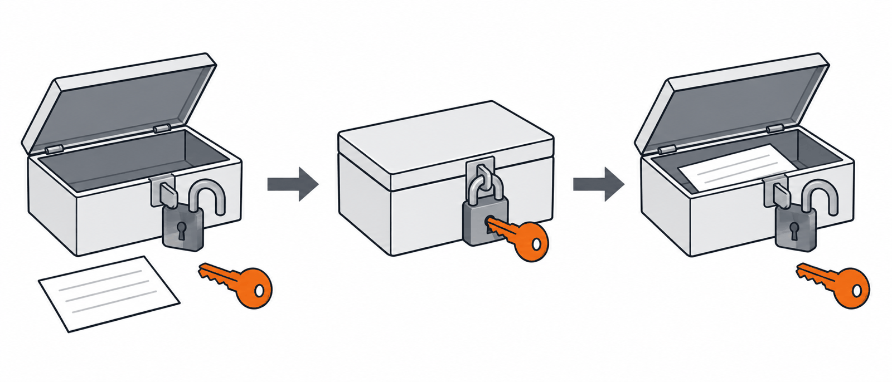
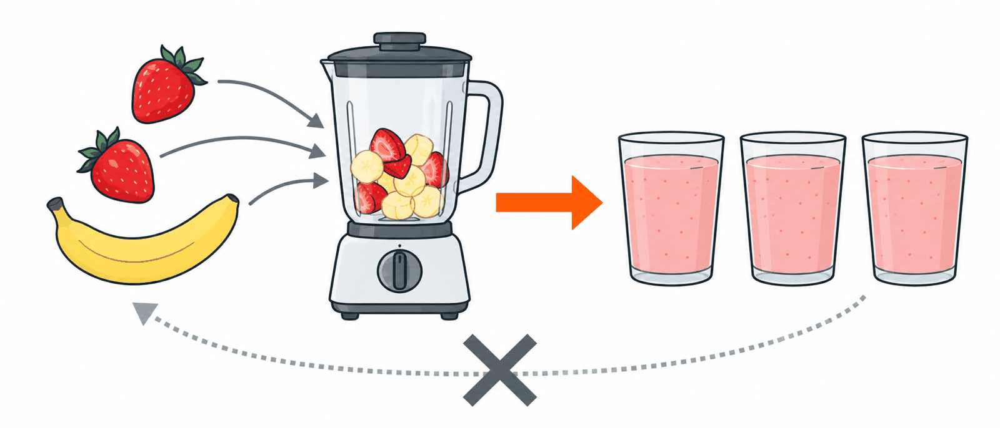

개인정보와
암호화个人信息
与加密
내 서비스가 기억할 기록을 AI와 함께 PRD 5항에 씁니다.先简单看看保护个人信息的加密，
再和 AI 一起把自己的服务要记住的记录写进 PRD 第 5 项。
암호화하지 않으면 생기는 일不加密会发生什么
7-1 처음에 본 은행 해킹에서 새어 나간 고객 정보는 은행의 데이터베이스에 있었습니다. 이런 정보를 아무 보호 없이 저장하면 어떻게 될까요? 2019년 페이스북은 수억 명의 비밀번호를 암호화하지 않은 그대로(평문) 내부 기록에 저장해 온 사실을 스스로 밝혔습니다. 회사 직원 수만 명이 찾아볼 수 있는 곳이었습니다. 몇 년 뒤 유럽의 개인정보 보호 기관은 이 일로 9,100만 유로의 과징금을 매겼습니다.7-1 一开始看到的银行黑客事件里，泄露的客户信息原本存在银行的数据库里。这类信息不加任何保护就保存，会怎样呢？2019 年，Facebook 自己公开：它多年来把数亿用户的密码不加密、原样（明文）存在内部记录里，公司里数万名员工都查得到。几年后，欧洲的个人信息保护机构为此开出了 9,100 万欧元的罚款。
엑셀은 파일 → 정보 → 통합 문서 보호 → 암호 설정으로 문서에 암호를 걸 수 있고, 반디집·7-Zip 같은 압축 프로그램으로 압축 파일에도 암호를 걸 수 있습니다. 개인정보가 든 파일을 보낼 때 씁니다.Excel 可以用 파일 → 정보 → 통합 문서 보호 → 암호 설정（文件 → 信息 → 保护工作簿 → 用密码进行加密）给文档加密码；用 Bandizip、7-Zip 这类压缩软件，也能给压缩文件加密码。发送含有个人信息的文件时会用到。
암호화에는 열쇠가 필요하다加密需要钥匙
데이터베이스에 저장한 정보를 지키는 대표적인 방법이 암호화입니다. 암호화는 자물쇠로 잠그는 일과 같습니다. 잠그려면 열쇠(key)가 있어야 하고, 같은 열쇠가 있으면 다시 열 수 있습니다.保护数据库里信息的代表性方法，就是加密。加密就像用锁把东西锁上。要锁上，就得有钥匙（key）；有同一把钥匙，就能再打开。

잠근 것을 같은 열쇠로 다시 여는 방식을 양방향 암호화라고 합니다.锁上的东西能用同一把钥匙再打开，这种方式叫双向加密。
열쇠를 가진 직원은 누구의 비밀번호든 열어 볼 수 있습니다. 해커가 데이터와 열쇠를 함께 훔치면 비밀번호가 모두 드러납니다. 이 비밀번호는 제대로 지켜진 걸까요?拿着钥匙的员工，谁的密码都能打开来看。黑客要是把数据和钥匙一起偷走，密码就全部暴露了。这样的密码，真的算保护好了吗？
그래서 비밀번호는 단방향 암호화所以密码用单向加密
비밀번호는 아무도 다시 열 수 없게 바꿔서 저장합니다. 이것을 단방향 암호화라고 합니다. 과일을 믹서기에 갈면 주스를 다시 과일로 되돌릴 수 없지만, 같은 과일을 넣으면 늘 같은 주스가 나오는 것과 같습니다.密码要变成谁都打不开的样子再保存，这叫单向加密。就像把水果放进搅拌机打成果汁，果汁变不回水果；可放同样的水果，出来的总是同样的果汁。

거꾸로 989e0d…에서 mypw123로는 되돌릴 수 없습니다.反过来，从 989e0d… 还原不回 mypw123。
저장된 값保存的值 989e0d…
그래서 직원도 내 비밀번호를 모르고, 잊으면 「찾기」가 아니라 「재설정」을 합니다.所以员工也不知道你的密码，忘了只能“重新设置”，而不是“找回”。
어떤 정보를 암호화하나哪些信息要加密
비밀번호처럼 되돌릴 필요가 없는 정보는 단방향으로 바꿉니다. 주민등록번호나 카드번호처럼 나중에 원래 내용을 다시 읽어야 하는 정보는, 열쇠로 다시 열 수 있는 양방향 암호화로 잠그고 열쇠는 따로 지킵니다. 비밀번호·주민등록번호·지문 같은 정보는 법으로 암호화하게 정해져 있습니다.像密码这样不需要还原的信息，用单向的方法转换。像身份证号、银行卡号这样以后还要读出原来内容的信息，就用能拿钥匙再打开的双向加密锁上，钥匙另外保管好。密码、身份证号、指纹这类信息，法律规定必须加密。
| 정보信息 | 예例子 | 어떻게 지키나怎样保护 |
|---|---|---|
| 비밀번호密码 | 로그인 비밀번호登录密码 | 단방향 · 아무도 되돌리지 못한다单向 · 谁都还原不了 |
| 나를 가리키는 번호能认出本人的号码 | 주민등록번호 · 여권번호 · 운전면허번호身份证号 · 护照号 · 驾照号 | 양방향 · 열쇠는 따로 보관双向 · 钥匙另外保管 |
| 몸의 정보身体信息 | 지문 · 얼굴指纹 · 面孔 | 양방향 · 열쇠는 따로 보관双向 · 钥匙另外保管 |
| 돈과 이어진 정보和钱有关的信息 | 카드번호 · 계좌번호银行卡号 · 账户号 | 양방향 · 화면에는 일부만 보여 준다双向 · 画面上只显示一部分 |
| 주고받는 모든 내용传来传去的所有内容 | 로그인할 때 보내는 비밀번호登录时发送的密码 | 주소창의 https · 🔒 보내는 길을 암호화地址栏的 https · 🔒 给传送的路加密 |
가장 안전한 개인정보는 처음부터 저장하지 않은 정보입니다. 이 수업의 서비스는 로그인과 실제 개인정보를 쓰지 않고, 5항의 「실제 개인정보를 사용하지 않는 방법」에 그 약속을 적습니다. 나중에 개인정보를 다루게 되면 이 표부터 떠올립니다.最安全的个人信息，是一开始就不保存的信息。这门课的服务不用登录，也不用真实个人信息，并把这个约定写进第 5 项的“不用真实个人信息的方法”。以后要处理个人信息时，先想到这张表。
데이터_예시.md를 데이터베이스 표로 다듬는다把数据示例文件整理成数据库表 핵심核心
3교시에는 암호화를 빼고 기억할 것만 표로 정리했습니다. 이제 암호화까지 알았으니, 그 표를 실제 데이터베이스 표 모양으로 다듬습니다. 열 이름과 기본키·외래키를 붙이고, 암호화가 필요한 열이 있는지 표시합니다. 이 파일은 제출물이 아니라 5항을 쓰는 재료입니다.第 3 节课先不管加密，只把要记住的整理成了表。现在连加密也学了，就把那张表整理成真正的数据库表的样子：加上列名、主键和外键，再标出有没有需要加密的列。这个文件不是提交物，而是写第 5 项的材料。
데이터_예시.md의 표를 실제 데이터베이스 표로 다듬어 줘. 표는 3개 이하로 하고, 표마다 열 이름과 기본키(PK), 외래키(FK)를 표시해 줘. 암호화가 필요한 열이 있으면 표시하고, 없으면 「없음」이라고 적어 줘. 로그인·회원 표와 실제 개인정보 열은 만들지 말고, SQL이나 코드는 쓰지 마. 데이터_예시.md 파일 아래에 이어서 저장해 줘.
请把 데이터_예시.md 里的表整理成真正的数据库表。 表最多 3 张，每张表都标出列名、主键（PK）和外键（FK）。 有需要加密的列就标出来，没有就写「无」。 不要建登录·会员表和真实个人信息的列，也不要写 SQL 或代码。 接着保存在 데이터_예시.md 文件的下面。
| 미리 보기로 읽고 확인할 것用预览读一读，确认这些 | 다르면 이렇게 말한다不对就这样说 |
|---|---|
| 표마다 한 행은 무엇인가每张表的一行是什么 | 「표마다 한 행이 무엇인지 한 문장으로 적어 줘.」「请用一句话写出每张表的一行是什么。」 |
| 표마다 기본키가 있나每张表都有主键吗 | 「표마다 기본키를 정하고 이유를 알려 줘.」「请给每张表定好主键，并告诉我理由。」 |
| 표가 둘이면 외래키가 여러 개 쪽에 있나有两张表时，外键在“多”的那边吗 | 「외래키가 1:N의 N 쪽에 있는지 확인해 줘.」「请确认外键是否在 1:N 的 N 那边。」 |
암호화 표시 — 개인정보를 안 쓰면 대개 「없음」加密标记 — 不用个人信息的话，一般是「없음」（无） | 「개인정보 열을 빼고, 암호화 표시를 다시 해 줘.」「请去掉个人信息的列，再重新标一次加密。」 |
| 로그인·회원 표나 SQL이 있나有没有登录·会员表或 SQL | 「로그인 표와 SQL은 빼 줘.」「请去掉登录表和 SQL。」 |
5항에 표를 넣고 해설을 붙인다在第 5 项放进表，再加上说明 핵심核心
PRD의 5. 데이터에는 데이터_예시.md에서 다듬은 표를 후보 테이블마다 넣고, 그 아래에 이 표가 무엇을 기억하는지 사람의 말로 해설을 붙입니다. 수행평가 2는 표보다 해설을 봅니다. AI가 옮기면 내가 처음부터 읽고 고칩니다. 6-2에서 비워 둔 6항 3번(다시 열어도 기록이 보인다)도 함께 채웁니다.PRD 的第 5 项「数据」里，每张候选数据表都放进在 데이터_예시.md 整理好的表，再在下面用人话写说明：这张表记住什么。实践考核 2 看的是说明，而不是表。AI 写完后，自己从头读一遍再修改。6-2 空着的第 6 项第 3 条（重新打开也能看到记录）也一起填上。
데이터_예시.md와 PRD.md를 읽고, PRD.md의 5. 데이터를 양식대로 채워 줘. 후보 테이블마다 데이터_예시.md에서 다듬은 표를 넣고, 표 아래에 이 표가 무엇을 기억하는지 사람의 말로 해설을 붙여 줘. SQL이나 코드는 쓰지 마. 6. 완성 기준의 3번 빈칸에는 「다시 열어도 저장된 기록을 확인할 수 있다」는 문장을 내 서비스에 맞게 적어 줘. 모르는 내용은 지어내지 말고 「(확인 필요)」라고 적어 줘. PRD.md 파일에 직접 저장하고, 무엇을 적었는지 세 줄로 알려 줘.
请读 데이터_예시.md 和 PRD.md，按格式填好 PRD.md 的第 5 项「数据」。 每张候选数据表都放进在 데이터_예시.md 整理好的表，并在表下面用人话说明这张表记住什么。 不要写 SQL 或代码。 第 6 项「完成标准」第 3 条的空白处，按我的服务写上“重新打开也能看到保存的记录”这句话。 不知道的内容不要编，写「(需要确认)」。 直接保存到 PRD.md 文件里，并用三行告诉我写了什么。
| 옮긴 뒤 내가 확인할 것写完后自己要确认的 | 이렇게 고친다这样改 |
|---|---|
| 기록记录 | 핵심 기능을 쓰면 저절로 생기는 기록인가. 아니면 2항에 맞게 고친다是不是用核心功能时自然产生的记录。不是的话，按第 2 项来改 |
| 저장하지 않을 정보不保存的信息 | 이름·연락처가 저장할 쪽에 있으면 이쪽으로 옮긴다姓名、联系方式如果在“要保存”那边，就挪到这边 |
| 후보 테이블候选数据表 | 1~3개인가. 표마다 아래에 해설이 있나. 쓰지 않는 칸은 지우지 말고 「없음」是不是 1~3 张。每张表下面有说明吗。用不到的栏目不要删，写 없음（无） |
| 6항 3번第 6 项第 3 条 | 다시 열어 확인할 수 있는 기록이 5항의 기록과 같은가重新打开能看到的记录，和第 5 项的记录一样吗 |
이럴 때는 이렇게 한다遇到这些情况这样做 필요할 때需要时
PRD에 5항을 쓰다 보면 막히는 자리가 비슷합니다. 내 상황과 같은 줄을 찾아 오른쪽대로 해 봅니다. 그래도 안 되면 손을 듭니다.写 PRD 第 5 项时，卡住的地方都差不多。找到和自己情况一样的那一行，照右边做。还不行就举手。
| AI가 5항이 아닌 다른 항목까지 크게 바꿨다AI 把第 5 项以外的项目也大改了 | 「무엇을 어떻게 고쳤는지 줄마다 알려 줘」를 보내고 하나씩 읽습니다. 마음에 안 들면 내 문장으로 되돌립니다.发「请逐行告诉我改了什么、怎么改的」，再逐处阅读。不满意就改回自己的句子。 |
| 5항에 표만 있고 해설이 없다第 5 项只有表，没有说明 | 「표마다 아래에 이 표가 무엇을 기억하는지 사람의 말로 해설을 붙여 줘」를 보냅니다.发「请在每张表下面，用人话说明这张表记住什么」。 |
| AI가 SQL 코드나 로그인·회원 표를 만들었다AI 写了 SQL 代码，或建了登录·会员表 | 「SQL과 로그인·회원 표는 빼 줘. 이 서비스는 로그인이 없어」를 보냅니다.发「请去掉 SQL 和登录·会员表。这个服务没有登录」。 |
| AI가 표를 네 개 이상 만들었다AI 建了四张以上的表 | 「후보 테이블을 3개 이하로 줄여 줘. 하나로 충분한지도 알려 줘」를 보냅니다.发「请把候选数据表减到 3 张以内，也告诉我一张够不够」。 |
FreeUsageLimitError나 429가 나오고 답이 멈춘다出现 FreeUsageLimitError 或 429，回答停住 | 무료 모델의 사용량이 잠깐 찬 것입니다. 1~2분 기다렸다가 같은 요청을 다시 보냅니다. 계속되면 손을 듭니다.是免费模型的用量暂时满了。等 1~2 分钟再发一次同样的请求。一直这样就举手。 |
저장하고 8회를 준비한다保存，准备第 8 次课
오늘은 기억할 것을 데이터베이스 표로 다듬고, 그 표와 해설을 PRD 5항에 넣고 6항 3번까지 채웠습니다. 이제 PRD의 모든 칸이 찼습니다. AI의 제안 가운데 받아들이지 않은 것이 있으면 7항에 한 줄 덧붙여 둡니다. 8회에는 새로 쓰지 않고, 이 PRD를 처음부터 끝까지 읽으며 서로 맞지 않는 곳을 고쳐 제출합니다.今天把要记住的整理成数据库表，再把表和说明写进 PRD 第 5 项，又写了第 6 项第 3 条。现在 PRD 的所有栏目都填满了。AI 的提议里有没接受的，就在第 7 项补上一行。第 8 次课不再新写，而是把这份 PRD 从头读到尾，改掉彼此对不上的地方再提交。
PRD.md— 1~7항이 모두 찬 PRD. 8회에 제출할 때08_assessment2_학생ID_이름.md로 이름을 바꾼다. 탭 옆 ●가 없어질 때까지Ctrl+S.PRD.md— 第 1~7 项都已填好的 PRD。第 8 次课提交时改名为08_assessment2_학생ID_이름.md。按Ctrl+S，直到标签页旁的 ● 消失。데이터_예시.md·기획_메모.md·.agents·opencode.json— 지우지 않는다.데이터_예시.md·기획_메모.md·.agents·opencode.json— 都不要删。
8회는 수행평가 2입니다. 8-1에서 무엇을 보는지 안내를 듣고, 8-2에서 PRD를 다듬어 제출합니다.第 8 次课是实践考核 2。8-1 听评价看什么，8-2 打磨 PRD 并提交。
8-1. 수행평가 2 안내 →8-1. 实践考核 2 说明 →